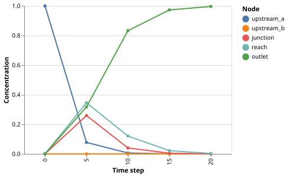

Pollutant Spread in a River Network
4.1 The Problem
- River networks branch and merge: pollutant introduced at one node is carried to all nodes reachable from it
- We want to track the concentration at each node over time to predict when downstream communities are affected
- This is a flow network problem: a directed graph where edges carry material from node to node
4.2 Representing the River Network
- The network is a directed tree: water flows from headwaters to an outlet, with no cycles
- Nodes represent measurement stations or junctions; edges represent river reaches
- Edge weights record relative discharge (i.e., mean flow rate)
upstream_a(node 0) is the spill siteupstream_b(node 1) is an uncontaminated headwater- Both drain into
junction(node 2), which drains toreach(node 3), which drains tooutlet(node 4) - Node 4 is the sink
- Pollutant that arrives there accumulates and is not transported further
Why is a river network represented as a directed graph rather than an undirected graph?
- Water can flow in either direction between any two connected nodes.
- Wrong: rivers flow in one direction, from higher to lower elevation; edges must be directed to encode this.
- The direction of each edge encodes which way water (and pollutant) flows.
- Correct: directed edges from upstream to downstream nodes capture the unidirectional nature of river flow.
- Directed graphs are always faster to compute with than undirected graphs.
- Wrong: the choice of directed vs. undirected is based on the physical system, not computational speed.
- Edge weights cannot be stored on undirected graphs.
- Wrong: undirected graphs support weighted edges just as directed graphs do.
4.3 The Transport Model
- At each time step, a fraction
TRANSPORT_RATEof the concentration at each non-sink node moves downstream - The remaining fraction \((1 - \text{TRANSPORT\_RATE})\) stays at the node (representing mixing and retention in the water column)
- For a node \(v\) with upstream neighbours \(u_1, u_2, \ldots\) each contributing fraction \(f_k\), the update rule is:
\[c_v^{n+1} = (1 - \alpha)\,c_v^n + \sum_k f_k\,c_{u_k}^n\]
- \(\alpha = \text{TRANSPORT\_RATE}\) and \(f_k = \alpha / \text{(number of downstream neighbours of } u_k\text{)}\)
- When a node drains into a single successor, \(f_k = \alpha\)
- When a node splits equally among two successors, each receives \(\alpha / 2\)
4.4 Building the Upstream Table
- Rather than building a matrix, we pre-compute the list of \((u, f)\) pairs for each node \(v\), where \(u\) is an upstream neighbour and \(f\) is the fraction of \(u\)’s concentration that flows into \(v\)
- This list is empty for headwater nodes (no upstream neighbours) and for isolated nodes
Put these steps in the correct order to fill in the upstream table for one non-sink node u.
- Find the list of downstream successors of u in the graph G
- Compute fraction = TRANSPORT_RATE / number of successors
- For each successor v, append (u, fraction) to upstream[v]
- Check that the fractions appended for u sum to TRANSPORT_RATE (conservation check)
In our 5-node tree every non-sink node has exactly one downstream successor. What fraction of its concentration does each non-sink node send downstream per step?
- 0.0
- Wrong: that would mean no pollutant is ever transported.
- TRANSPORT_RATE / 2
- Wrong: dividing by 2 would only apply if the node had two successors.
- TRANSPORT_RATE
- Correct: with one successor, fraction = TRANSPORT_RATE / 1 = TRANSPORT_RATE.
- 1.0
- Wrong: 1.0 would mean all concentration moves downstream and none is retained.
4.5 Running the Simulation
- For each time step and each node \(v\),
retainedis the fraction staying put andinflowis the sum of fractions arriving from upstream neighbours - The loop saves a snapshot every
SNAPSHOT_INTERVALsteps so that only a small table is stored
4.6 Visualizing the Results

4.7 Testing
- Mass conservation
- At every step, each unit of concentration is either retained at its node or forwarded to a downstream neighbour.
- No mass is created or destroyed, so the sum over all nodes must equal 1.0 throughout.
- Floating-point addition of 5 small numbers over 20 steps introduces rounding of at most \(10^{-12}\).
- Non-negativity
- Every update is a weighted sum of non-negative concentrations with non-negative fractions.
- Concentration cannot go negative; a negative value would indicate a code error.
- Monotone decay at the spill node
upstream_ahas no upstream neighbours, so each step it retains only \((1 - \alpha)\) of whatever it holds.- Starting from \(c_0 = 1\), its concentration decays as \((1 - \alpha)^n\), which is strictly decreasing.
- Uncontaminated node stays zero
upstream_balso has no upstream neighbours and starts at zero concentration.- Each step it retains \((1 - \alpha) \times 0 = 0\), so it remains zero throughout.
- Monotone accumulation at the outlet
- The outlet (sink) only receives mass and never releases it, so its concentration is non-decreasing.
- Upstream fractions sum to transport rate
- For each non-sink node \(u\) that has downstream successors, the fractions stored in the upstream table must sum to exactly
TRANSPORT_RATE, confirming that all transported mass is accounted for
- For each non-sink node \(u\) that has downstream successors, the fractions stored in the upstream table must sum to exactly
from pollute import (
NODE_NAMES,
N_STEPS,
SINK,
SPILL_NODE,
TRANSPORT_RATE,
build_network,
build_upstream,
)
def _run(n_steps=N_STEPS):
"""Return concentration list after n_steps using the same loop as simulate."""
G = build_network()
upstream = build_upstream(G)
n = len(NODE_NAMES)
c = [0.0] * n
c[SPILL_NODE] = 1.0
# Outflow rates mirror those in simulate().
outflow = [0.0] * n
for u in range(n):
if u != SINK and list(G.successors(u)):
outflow[u] = TRANSPORT_RATE
for _ in range(n_steps):
new_c = [0.0] * n
for v in range(n):
retained = c[v] * (1.0 - outflow[v])
inflow = sum(fraction * c[u] for (u, fraction) in upstream[v])
new_c[v] = retained + inflow
c = new_c
return c
def test_mass_conservation():
# Each step, every unit of concentration either stays at its node or moves
# to a downstream neighbour. No mass is created or destroyed, so the total
# must equal 1.0 throughout. Floating-point rounding in repeated addition
# can accumulate, but for 5 nodes and 20 steps the error stays below 1e-12.
c = _run()
assert abs(sum(c) - 1.0) < 1e-12
def test_all_nonnegative():
# Every update is a weighted sum of non-negative values with non-negative
# weights, so concentration cannot go negative at any node or step.
G = build_network()
upstream = build_upstream(G)
n = len(NODE_NAMES)
c = [0.0] * n
c[SPILL_NODE] = 1.0
outflow = [0.0] * n
for u in range(n):
if u != SINK and list(G.successors(u)):
outflow[u] = TRANSPORT_RATE
for step in range(N_STEPS):
new_c = [0.0] * n
for v in range(n):
retained = c[v] * (1.0 - outflow[v])
inflow = sum(fraction * c[u] for (u, fraction) in upstream[v])
new_c[v] = retained + inflow
c = new_c
assert all(x >= 0.0 for x in c), f"negative concentration at step {step + 1}"
def test_spill_node_decreases():
# upstream_a (node 0) has no upstream neighbours, so every step it loses
# TRANSPORT_RATE of whatever concentration it holds and gains nothing back.
# Its concentration must be strictly decreasing from its starting value of 1.
G = build_network()
upstream = build_upstream(G)
n = len(NODE_NAMES)
c = [0.0] * n
c[SPILL_NODE] = 1.0
outflow = [0.0] * n
for u in range(n):
if u != SINK and list(G.successors(u)):
outflow[u] = TRANSPORT_RATE
prev = c[SPILL_NODE]
for _ in range(N_STEPS):
new_c = [0.0] * n
for v in range(n):
retained = c[v] * (1.0 - outflow[v])
inflow = sum(fraction * c[u] for (u, fraction) in upstream[v])
new_c[v] = retained + inflow
c = new_c
assert c[SPILL_NODE] < prev
prev = c[SPILL_NODE]
def test_uncontaminated_node_stays_zero():
# upstream_b (node 1) starts at zero concentration and has no upstream
# neighbours feeding into it. It loses TRANSPORT_RATE each step, so its
# concentration is 0 * (1 - TRANSPORT_RATE)^step = 0 throughout.
c = _run()
assert c[1] == 0.0 # upstream_b is never contaminated
def test_outlet_nondecreasing():
# The outlet (sink) only receives mass; it never sends mass downstream.
# Its concentration therefore cannot decrease between steps.
G = build_network()
upstream = build_upstream(G)
n = len(NODE_NAMES)
c = [0.0] * n
c[SPILL_NODE] = 1.0
outflow = [0.0] * n
for u in range(n):
if u != SINK and list(G.successors(u)):
outflow[u] = TRANSPORT_RATE
prev = c[SINK]
for _ in range(N_STEPS):
new_c = [0.0] * n
for v in range(n):
retained = c[v] * (1.0 - outflow[v])
inflow = sum(fraction * c[u] for (u, fraction) in upstream[v])
new_c[v] = retained + inflow
c = new_c
assert c[SINK] >= prev
prev = c[SINK]
def test_upstream_fractions_sum():
# For each non-sink node u that has downstream neighbours, the total
# fraction of concentration it sends out equals TRANSPORT_RATE exactly.
# This can be checked by summing the fractions stored in build_upstream.
G = build_network()
upstream = build_upstream(G)
# Collect total outflow fraction assigned to each source node.
sent = {u: 0.0 for u in range(len(NODE_NAMES))}
for v in range(len(NODE_NAMES)):
for (u, fraction) in upstream[v]:
sent[u] += fraction
for u, total in sent.items():
if total > 0.0:
assert abs(total - TRANSPORT_RATE) < 1e-12, (
f"node {NODE_NAMES[u]} sends {total}, expected {TRANSPORT_RATE}"
)4.8 Exercises
4.8.1 Do the math
Starting from \(c = [1, 0, 0, 0, 0]\) and using TRANSPORT_RATE = 0.4, what is the concentration at junction (node 2) after exactly 2 time steps? Give your answer to two decimal places.
Hint: trace through the update rule step by step. At step 1, junction receives \(0.4 \times c_0[\text{upstream\_a}]\) from upstream_a. At step 2, junction retains \(0.6\) of its step-1 value and receives another inflow from upstream_a.
4.8.2 Adding a tributary
Add a sixth node tributary (node 5) that joins at reach (node 3) with edge weight 2.0. Update build_network and rerun the simulation. Does test_mass_conservation still pass? Does the pollutant reach the outlet faster or slower?
4.8.3 Variable transport rate
Replace the uniform TRANSPORT_RATE with per-edge rates stored in a dictionary keyed by (src, dst). Assign higher rates to high-flow edges (e.g., rate proportional to edge weight / max edge weight). Modify build_upstream to use per-edge rates and update simulate accordingly. How does the arrival time at the outlet change compared to the uniform-rate model?
4.8.4 Continuous spill
Change the initial condition so that upstream_a receives a constant input of 0.1 concentration units per step (a continuous source rather than an instantaneous spill). Modify simulate to add this source term to new_c[SPILL_NODE] after each update step. Is mass still conserved? At what step does the outlet concentration stabilise?
4.8.5 Two-spill comparison
Run two separate simulations: one with the spill at upstream_a and one with a spill at upstream_b. Add the two concentration lists at each step. Compare the result to a single simulation that starts with concentration 1.0 at both headwater nodes simultaneously. Are the results identical? Explain why in terms of the structure of the update rule.